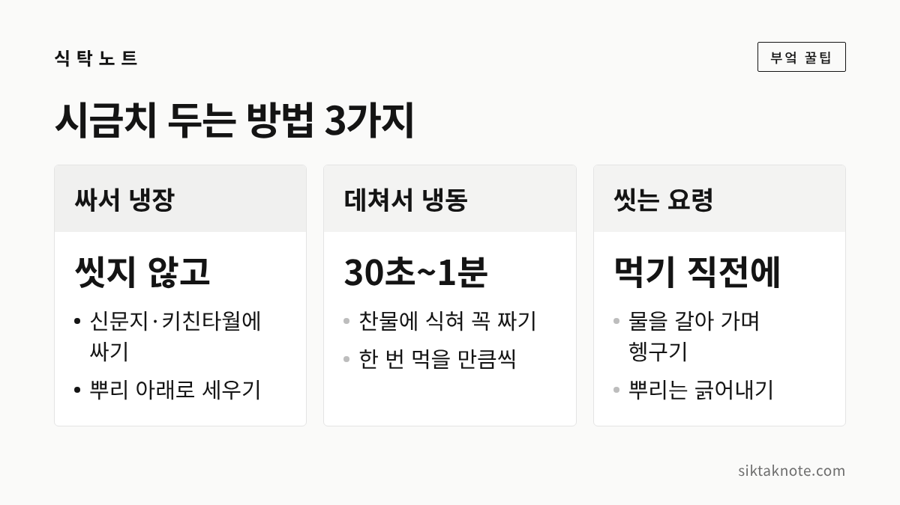
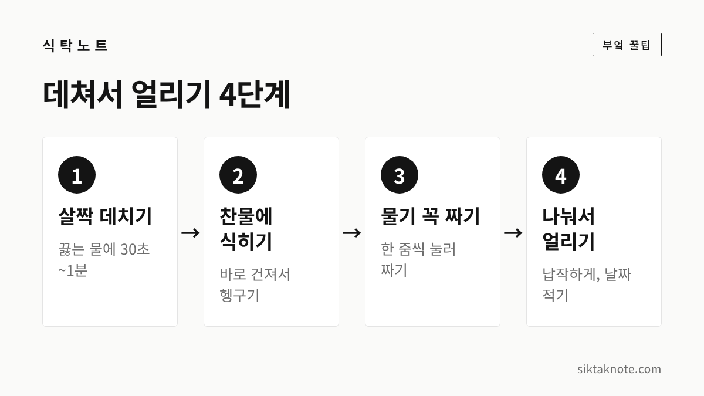

시금치 보관법 3가지, 겨울 시금치 오래 먹는 방법

3줄 요약
- 바로 먹지 않을 시금치는 씻지 말고 신문지나 키친타월에 싸서 뿌리가 아래로 가게 세워 냉장해 주세요.
- 오래 두려면 끓는 물에 30초~1분 데쳐 찬물에 식히고, 물기를 꼭 짜서 한 번 먹을 만큼씩 얼립니다.
- 흙이 많은 뿌리는 먹기 직전에 물을 갈아 가며 씻고, 뿌리는 너무 잘라 내지 않는 게 좋습니다.
겨울이 되면 시금치가 유난히 달고 맛있는데요. 시장에서 뿌리째 묶어 파는 시금치를 한 단씩 담다 보면 양이 꽤 많죠. 그런데 시금치는 잎이 얇아서 며칠만 지나도 물러지기 쉽거든요. 그래서 오늘은 겨울 시금치를 끝까지 맛있게 먹는 방법을 세 가지로 나눠 알려 드리겠습니다. 씻지 않고 싸서 냉장하는 법, 데쳐서 냉동하는 법, 먹기 직전에 씻는 손질 요령입니다.
먼저 시금치 고르는 법
보관은 사 올 때부터 시작됩니다. 한 언론 기사가 인용한 한국농수산식품유통공사 안내에 따르면 잎이 두껍고 푸르며 윤기가 도는 시금치가 좋습니다. 뿌리는 짧고 붉은빛이 선명할수록 당도가 높다고 해요.
반대로 잎이 지나치게 넓거나 길게 자랐거나 줄기가 뻣뻣하면 맛이 떨어진다고 합니다. 싱싱해 보이려고 물을 뿌려 파는 곳도 있다고 하니, 묶음 안쪽까지 한번 살펴보세요.

겨울 시금치, 포항초와 섬초
겨울에 보이는 시금치는 가을에 씨를 뿌려 찬 바람 속에서 자란 것이 많은데요. 한 기사는 추위를 만나면 잎 속 전분이 당으로 바뀌어 단맛이 강해진다고 설명했습니다. 이 설명은 기사 본문의 것이라 공식 기관 자료로 확인한 내용은 아닙니다.
이름이 알려진 겨울 시금치로는 포항초가 있어요. 2023년 매일신문 보도에 따르면 포항초는 11월 중순 무렵부터 이듬해 2월 말~3월 초까지 수확하고, 뿌리가 길고 튼실하게 자라도록 모래 두둑을 만들어 키운다고 합니다. 2015년에 지리적표시로 등록되었다는 내용도 같은 보도에 나옵니다. 수확 시기는 해마다 조금씩 다를 수 있어요.
섬초는 전남 신안의 비금도와 도초도에서 겨울철에 재배하는 시금치입니다. 신안군은 해풍을 맞고 자라 단맛이 나고, 잎과 줄기가 두툼해서 저장성이 좋다고 소개하고 있어요. 한 기사는 섬초가 나물이나 무침에, 포항초는 국이나 찌개에 어울린다고 소개했는데요. 어느 쪽이든 아래 방법은 똑같이 쓰실 수 있어요.

1. 씻지 않고 싸서 냉장하기
며칠 안에 먹을 시금치는 냉장 보관이 가장 간단합니다. 핵심은 씻지 않는 것인데요. 씻어서 물기가 남은 채로 두면 잎이 금방 무르기 쉬우니, 흙이 묻은 채로 두었다가 먹을 때 씻는 편이 낫습니다.

방법은 이렇습니다. 시금치를 신문지나 키친타월로 감싸고, 분무기로 물을 아주 살짝만 뿌려 줍니다. 그다음 비닐봉지나 용기에 넣어 냉장고 채소칸에 뿌리가 아래로 가게 세워 두세요. 농식품정보누리 안내를 소개한 정보 글에서도 종이로 감싸 뿌리를 아래로 세워 보관하라고 합니다.
잎채소를 키친타월에 싸서 세워 두는 방식은 상추 보관법과 닮았습니다. 냉장고는 식약처 안내대로 5℃ 이하로 유지해 주세요. 며칠까지 두어도 되는지는 공식 기준을 찾지 못했는데요. 시금치는 오래 둘수록 시들기 쉬우니, 사 온 뒤 되도록 빨리 드시길 권합니다.
2. 데쳐서 냉동하기
다 먹기 어려울 만큼 많이 샀다면 데쳐서 얼려 두는 게 좋습니다. 보도된 방법들은 대체로 살짝 데친 뒤에 얼리라고 소개합니다.

한 기사에서는 시금치를 끓는 물에 30초~1분 데친 뒤 곧바로 찬물에 식혀야 색이 남는다고 했습니다. 줄기가 굵으면 조금 더 데치라는 설명도 있었고요. 식힌 시금치는 한 줌씩 쥐고 물기가 더 나오지 않을 때까지 꼭 짜 주세요. 물기가 남으면 얼면서 덩어리지고, 나중에 국에 넣을 때 맛도 싱거워진다고 합니다.
그다음 한 번 먹을 만큼씩 나눠 지퍼백에 납작하게 담고, 공기를 빼서 날짜를 적어 냉동실에 넣어 주세요. 식약처 안내로는 냉동식품은 영하 18℃ 이하에서 보관합니다. 얼려 둘 수 있는 기간은 공식 자료에서 확인하지 못했으니, 날짜를 적어 두고 먼저 얼린 것부터 쓰세요. 한 번 먹을 만큼씩 나누는 요령은 남은 밥 냉동 보관과 같은 원리예요.
3. 먹기 직전에 씻고 뿌리째 다듬기
시금치는 뿌리 쪽에 흙이 많이 끼어 있어서 씻는 일이 은근히 번거로운데요. 그래도 보관할 때는 씻지 않고 두었다가, 요리하기 직전에 한꺼번에 씻는 것이 좋습니다.
대야에 찬물을 받아 시금치를 담그고, 흙이 가라앉도록 물을 여러 번 갈아 가며 헹궈 주세요. 뿌리 사이에 흙이 남기 쉬우니 뿌리 쪽을 손으로 벌려 가며 씻으시면 됩니다.
다듬을 때는 뿌리를 통째로 잘라 내지 않는 쪽이 좋습니다. 한 기사는 뿌리에 감칠맛이 있다며, 지저분한 부분만 칼로 긁어내고 쓰라고 소개했어요. 뿌리를 얼마나 남길지는 취향에 따라 정하셔도 되겠습니다.
시금치를 데치는 이유와 요령
시금치를 볼 때마다 데치라는 이야기를 듣게 되죠. 한 기사는 시금치에 든 옥살산(수산) 때문이라고 설명했습니다. 데치면 옥살산에서 나오는 떫은맛이 줄고 단맛이 살아난다고 해요. 이 기사에서는 전문가들이 끓는 물에 30초~1분 정도 짧게 데치고, 바로 찬물에 헹궈 색과 식감을 지키라고 조언한다고 했습니다.
오래 데치면 식감이 물러지고 색이 탁해지기 쉽습니다. 데친 뒤 찬물에 식히는 요령은 나물 쓴맛 빼는 법 글에서도 같은 원리로 다뤘으니 함께 봐 두셔도 좋겠습니다. 데칠 때 소금을 넣는지, 넣는다면 얼마나 넣는지는 자료마다 달라서 이 글에서는 따로 정하지 않았어요.
얼린 시금치 맛있게 쓰는 법
냉동 시금치는 요리에 따라 쓰는 방법이 조금 다릅니다. 한 기사에서는 국이나 볶음에는 녹이지 않고 언 채로 끝에 넣고, 무침처럼 양념하는 반찬은 냉장고에서 천천히 녹인 뒤 물기를 다시 짜서 쓰라고 안내했습니다.
얼렸다 녹인 시금치는 생 시금치보다 아삭함이 줄어들 수 있어요. 그래서 무침보다는 된장국이나 달걀국, 볶음처럼 익히는 요리에 잘 어울립니다. 또 한 번 녹인 시금치는 다시 얼리지 않는 것이 좋습니다. 필요한 만큼만 꺼내 쓰고, 녹인 것은 그날 안에 요리하세요.
자주 묻는 질문
시든 시금치는 살릴 수 있나요?
한 기사는 뿌리에 십자로 칼집을 내고 찬물에 잠깐 담갔다가 건져 그늘에 두면 생기가 돈다고 소개했습니다. 다만 잎이 누렇게 변했거나 물러서 냄새가 난다면 드시지 않는 게 안전합니다.
데친 시금치는 냉장고에서 며칠 두나요?
공식 기준은 찾지 못했습니다. 한 기사는 식약처 안내를 들어 조리한 음식은 2시간 안에 냉장이나 냉동하라고 전했는데요. 데친 시금치도 실온에 오래 두지 말고, 식으면 바로 밀폐 용기에 담아 냉장하세요. 며칠 안에 드시는 게 좋겠습니다.
물을 뿌려 파는 시금치는 어떻게 하나요?
물이 잎에 많이 묻어 있으면 빨리 무를 수 있어요. 집에 와서 키친타월로 물기를 가볍게 닦고, 새 키친타월에 싸서 냉장하세요.
마지막으로 기억하실 세 가지
시금치는 씻지 않고 싸서 세워 냉장하고, 오래 두려면 데쳐서 한 번 먹을 만큼씩 얼리고, 씻는 건 먹기 직전에 하시면 됩니다. 이 세 가지만 지켜도 겨울 시금치를 한결 오래 즐길 수 있을 것 같습니다.